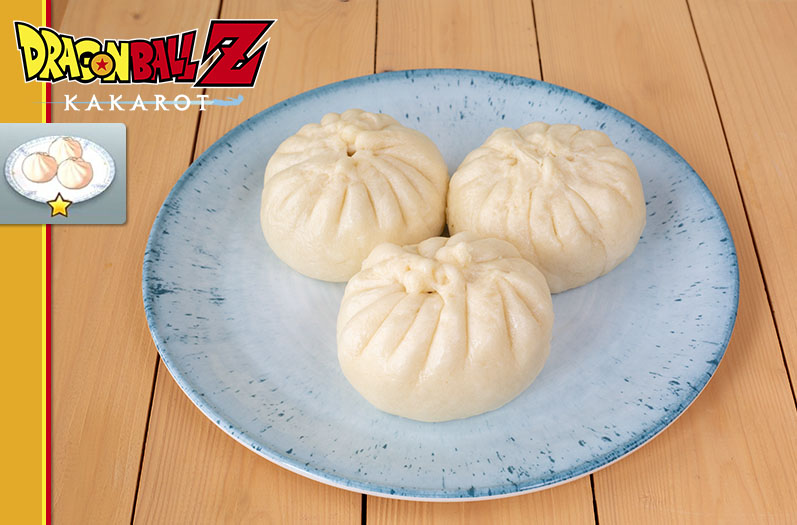

Juicy Steamed Buns
Dragon Ball Z: Kakarot

Ingredients
Dough
- 1 1/2 tsp yeast
- 3/4 cup warm water
- 1/2 cup canola oil
- 2 1/4 cups all-purpose flour
- 3/4 cup cornstarch
- 2 tsp baking powder
- 1/4 cup sugar
- 2 tsp salt
Filling
- 3/4 lb ground beef
- 1/2 lb ground lamb
- 1/2 onion finely chopped
- 4 scallions finely chopped
- 3 dried shiitakes rehydrated and finely chopped
- 2 inch piece of garlic grated
- 2 garlic cloves minced
- 1 tbsp soy sauce
- 2 tbsp shaoxing wine chinese cooking wine (can substitute with dry sherry)
- 1 tsp sesame oil
- 1 tsp fish sauce
- 1 tsp chinese five spice
- 2 tsp sugar
- 1 tsp salt
- 2 tsp pepper
- 1 tbsp cornstarch
Instructions
- Mix the yeast, water, and canola oil. Allow this to rest for 5 minutes or until the yeast becomes active.
- Combine the flour, cornstarch, baking powder, sugar, and salt in a large bowl. Slowly mix in the liquid with the flour. Mix until it all comes together.
- Transfer to a lightly floured surface and knead for 3 minutes. Place the dough in an oiled bowl and cover. Let it rest until it doubles in size, about 2 hours.
- Combine all the ingredients for the filling in a bowl until just mixed. Do not overwork the filling! Split the dough into 10 equal round pieces. Place in the freezer until you are ready to form the bao.
- When you are ready to make the bao, place water in a pot with a steamer basket and bring to a boil. Punch the dough and roll out into a long tube.
- Split into 10 equal pieces and form into balls. Take a portion and roll out to about 6 inches wide. Avoid making it too thin. Add one of the meat balls on top.
- Pleat the buns until sealed. Place on top of a small piece of parchment paper and then place in a steam basket. Make sure the bao aren't touching. Once the water is boiling, place the steamers on top of the pot and steam for 18 minutes.
Source-pixelatedprovisions.com
Home